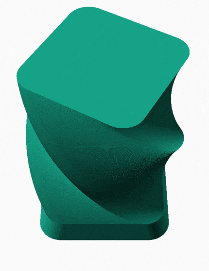
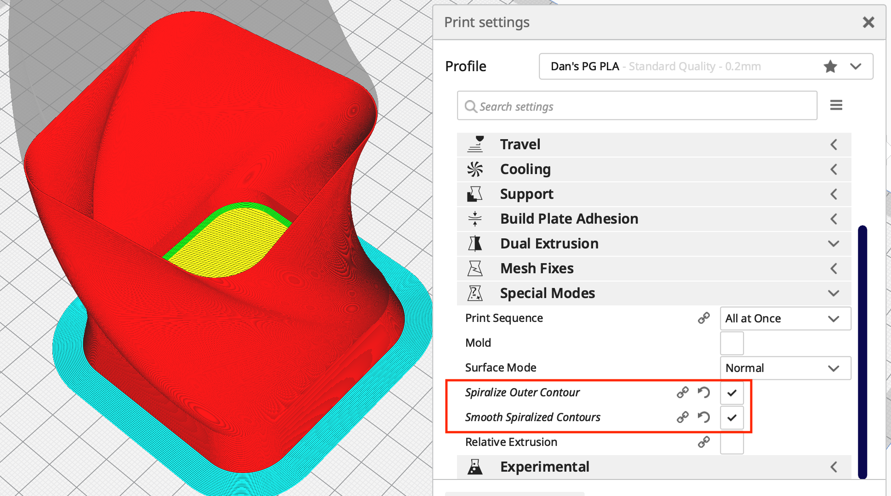

Note the section at the bottom of SCAD file. Uncomment and select View > Animate in OpenSCAD. To actually create the following gif, I dumped the frames to disk and combined them into a single animated gif with zgif.com.
Selected "Spiralize Outer Contour" and "Smooth Spiralized Contours".
